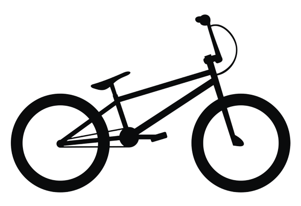

History of BMX
BMX (Bicycle Motocross) is a type of off-road bicycle racing that originated in the late 1960s in Southern California. It was initially inspired by motocross racing, with participants using modified bicycles to emulate the style and excitement of motocross.